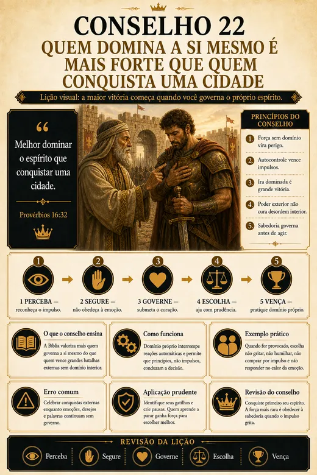
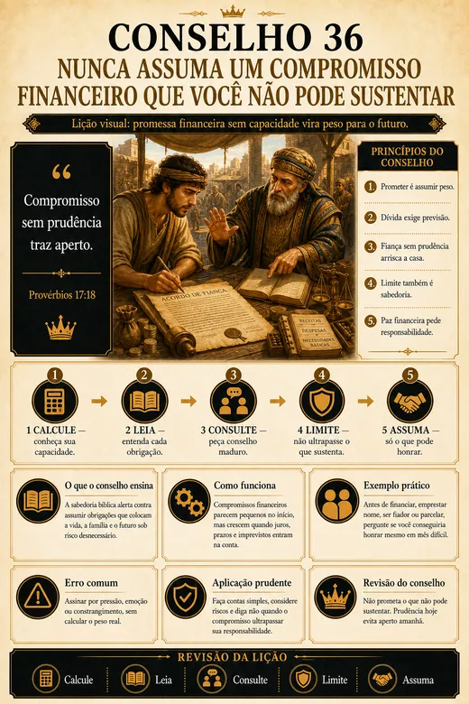
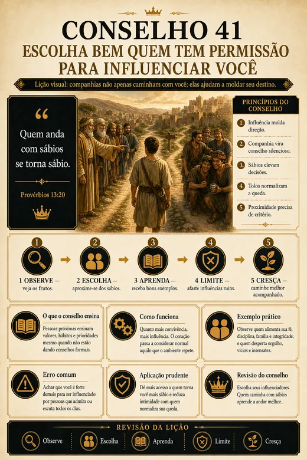
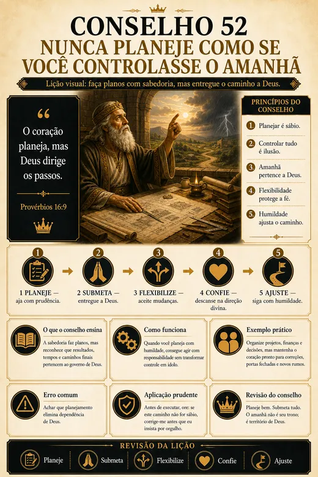

Consejo
Entiende en una frase la idea central para aquella situación.
.webp)
Principios de Proverbios y Eclesiastés transformados en mapas visuales simples, para consultar en pocos minutos siempre que necesites dirección.
QUIERO ACCEDER A LOS 70 CONSEJOS →.webp)
.webp)
.webp)
.webp)
Cuando la presión aumenta, es fácil reaccionar con prisa, emoción o por la opinión de otras personas. En esos momentos, no necesitas acumular más información. Necesitas encontrar un principio claro que te ayude a ordenar tus pensamientos, evaluar el camino y reflexionar antes de actuar.
Cada consejo transforma un principio bíblico en una secuencia simple de lectura, reflexión y aplicación práctica.
.webp)
Entiende en una frase la idea central para aquella situación.
Mira en qué pasaje de Proverbios o Eclesiastés está fundamentado.
Responde preguntas que te ayudan a ver la situación con más conciencia.
Lleva el principio a la decisión, conversación o desafío que estás viviendo.
Los mapas no sustituyen la lectura bíblica. Te ayudan a localizar, comprender y aplicar un principio específico cuando necesitas reflexionar sobre una situación real. Arrastra para comparar Proverbios 11 con el Consejo 01.
En Proverbios 11, el versículo 14 aparece en medio de los 31 versículos del capítulo. En el mapa, el principio se destaca, se explica y se acompaña de preguntas prácticas para que reflexiones antes de decidir.
Texto bíblico: versión de dominio público.
Mira páginas reales del material, exactamente en el formato en que las recibirás.

EMOCIONES
DINERO
RELACIONES
PROPÓSITOEstos son apenas 4 de los 70 mapas. Cada consejo parte de un principio bíblico y te conduce hasta una aplicación práctica.
.webp)
Úsalo en el móvil, en la tablet o en la computadora. Si prefieres, imprime las páginas en A4 y mantén a la vista los consejos más importantes.
.webp)
.webp)
.webp)
.webp)
18 consejos para fortalecer vínculos, proteger la paz del hogar y conducir a la familia con principios.
.webp)
20 consejos sobre trabajo, dinero, integridad y prosperidad sin abrir la mano de la conciencia.
.webp)
21 consejos para liderar personas, tomar decisiones responsables y construir respeto.
.webp)
Una jornada diaria con meditación, pregunta para reflexión, oración y una acción práctica.
.webp)
.webp)
.webp)
Todas estas personas recibieron el mismo paquete que está disponible para ti en esta página.
Un único pago. Sin mensualidad y sin suscripción.
Sin mensualidad. Sin suscripción. Sin cobros recurrentes.
Finaliza el pago único en el checkout seguro.
Después de la confirmación, el acceso a los archivos digitales se envía automáticamente.
Consulta en el móvil, tablet o computadora e imprime en A4 cuando quieras.
Todo el paquete se libera después de la confirmación del pago y se envía directamente a tu e-mail.
.webp)
Accede a los 70 Consejos, explora los mapas y comprueba si el material tiene sentido para ti. Si dentro de 7 días no estás satisfecho por cualquier motivo, puedes solicitar la devolución de 100% del valor pagado, sin burocracia.
La compra se procesa en un entorno protegido. Tus datos personales y financieros permanecen seguros.
Acceso claro, práctico y preparado para consulta en diferentes dispositivos.
Después de que el pago sea aprobado, recibirás las instrucciones de acceso al material digital en el correo informado durante la compra.
Es un producto 100% digital. Puedes abrirlo desde el móvil, tablet o computadora.
Sí. Las páginas fueron organizadas para que puedas imprimirlas en A4 cuando quieras.
No. Los mapas sirven como una guía visual de consulta y mantienen la referencia bíblica como fuente.
Puedes utilizarlo como apoyo de lectura y reflexión en tu rutina personal y familiar.
Sí. Cuando la sección de bonificaciones está habilitada, los cuatro materiales forman parte del paquete mostrado en esta página.
El pago es único y el acceso al material permanece disponible de acuerdo con las condiciones informadas en el checkout.
Acceso inmediato · pago único · garantía de 7 días